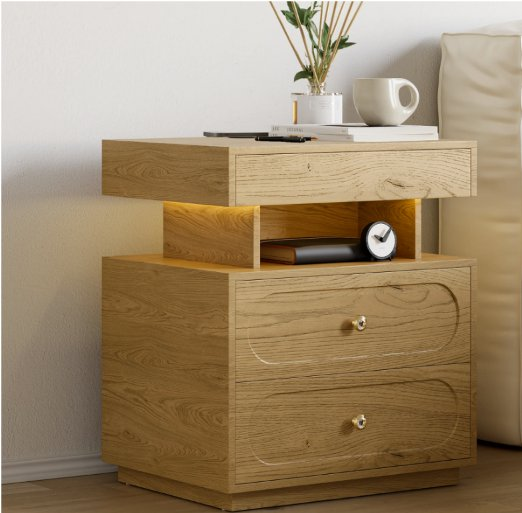
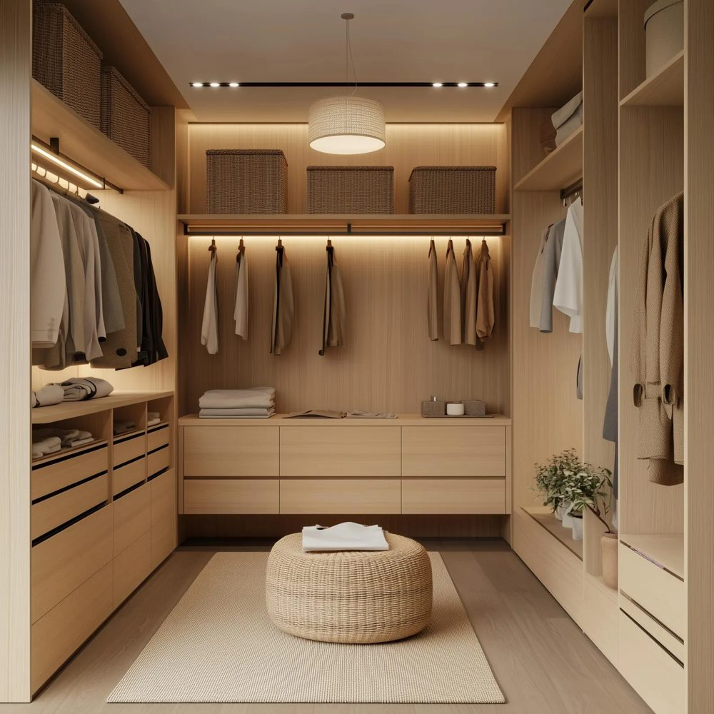

Mi piacciono le cose ben fatte, che funzionano davvero e che si vedono invece di restare nascoste. Vado dritto al punto, ho molta curiosità e sto bene quando dietro il disordine c'è un buon sistema.
Ho un lato geek: mi piace mettere un po' di tecnologia nelle cose e controllare la casa dal telefono. Non ho la fissa dell'ordine, ma mi piace avere un sistema e certe cose ognuna al suo posto. Non amo gli ambienti pieni di roba: anche se spesso finisco per vivere in un po' di caos, preferirei di no.
Lavoro nell'intelligenza artificiale, sul lato prodotto e tecnologia. Ho iniziato con la fisica (un dottorato in fisica astroparticellare), poi ho passato anni nell'editoria scientifica e nella ricerca sull'AI responsabile.
Sul mio spazio di lavoro ho una vera fissazione: voglio avere tutto a portata di mano. Di solito lavoro dall'ufficio tre giorni a settimana e da casa due. Voglio una scrivania organizzata sia per lavorare sia per giocare, passando da un sistema all'altro senza intoppi.
Allenamento con i pesi tre volte a settimana, con una piccola palestra in casa per i giorni in cui non riesco a uscire. Libri, musica, cinema e tanta fantascienza. Mi piace andare in moto.
Mi piacerebbe avere tempo e spazio per hobby più manuali come la stampa 3D, la falegnameria o il modellismo, che facevo da adolescente.
Legno caldo contro acciaio nero. Arredi in bianco e nero, con il colore che arriva dalla luce Philips Hue, poster al neon di città, qualche accento forte e Made in Italy quando posso.
Tengo moltissimo all'illuminazione di casa, in particolare a poterne controllare colori e atmosfera. Preferisco tenere neutri i colori delle stanze (da qui il bianco e nero dell'ufficio) e portare il colore con la luce.
Stanze
Clicca su una stanza per aprire la sua pagina con foto e link. I colori sono approssimativi, letti dalle foto, quindi vanno verificati di persona. I riquadri contrassegnati Da confermare nelle pagine delle stanze sono segnaposto non ancora scelti.


Ufficio - Alex
Arredi in bianco e nero, colore solo dalla luce Philips Hue e dall'arte cyberpunk, con un angolo palestra su tatami nero.
Apri Ufficio - Alex →


Soggiorno - Alex
Divano e poltrona a dondolo beige, diffusori da pavimento, un angolo bar e la TV a parete. Base calma, oggetti forti.
Apri Soggiorno - Alex →


Sala da pranzo - Alex
Tavolo in legno caldo, sedie nere, lampade a sospensione in vetro fumé e uno skyline di Manhattan sulla parete di fondo. Niente rosso.
Apri Sala da pranzo - Alex →


Camera da letto - Alex
La stanza più tranquilla: un letto scelto, comodini in rovere chiaro e un'idea di cabina armadio in sabbia e crema.
Apri Camera da letto - Alex →